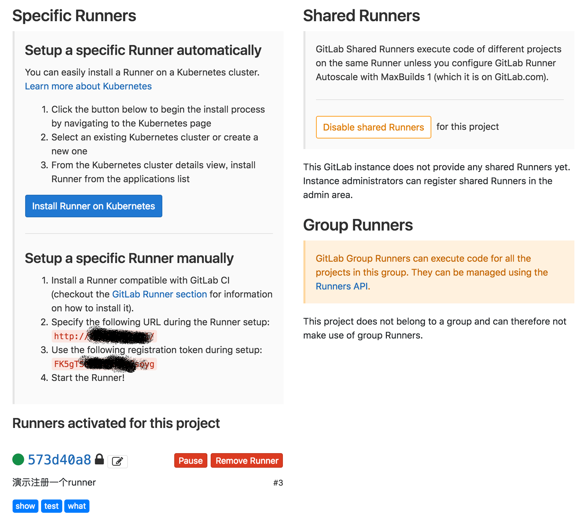

gitlab-ci-cd之（四）——gitlab-runner安装
从表面看，当我们配置的任务触发的时候，gitlab在执行任务，其实不然。当我们在项目中配置的任务触发的时候，gitlab只起到了调度的作用，他会根据配置文件将任务丢给一个runner，runner才是真正的苦力，然后gitlab作为调度者，和用户端（页面）、runner之间通讯，将runner的信息、状态输出到用户端。所以，后面的runner也是需要我们自己配置的。想知道如何配置的吗，别急，我们继续往下看。
首先安装runner服务，我们还是采用docker来安装，具体信息看这里，传送门。
拉取镜像
1 | docker pull gitlab/gitlab-runner |
运行runner服务
1 | docker run -d --name gitlab-runner --restart always \ |
注册runner
runner服务已经起来了，我们还需要在runner服务中为项目注册具体的runner，接下来我们注册一个runner。
在开始之前呢，还需要新建一个项目，我们注册的runner是根据项目相关的，会用到项目中生成的配置。
建立好项目之后，运行docker exec -it gitlab-runner gitlab-ci-multi-runner register，按照交互提示输入内容，1
2
3
4
5
6
7
8
9
10
11
12
13
14
15
16Running in system-mode.
Please enter the gitlab-ci coordinator URL (e.g. https://gitlab.com/):
http://{ip}/
Please enter the gitlab-ci token for this runner:
{token}
Please enter the gitlab-ci description for this runner:
[3bc8d0130458]: 演示注册一个runner
Please enter the gitlab-ci tags for this runner (comma separated):
show,test,what
Registering runner... succeeded runner=FK5gTSEB
Please enter the executor: shell, virtualbox, docker+machine, docker, docker-ssh, parallels, ssh, docker-ssh+machine, kubernetes:
docker
Please enter the default Docker image (e.g. ruby:2.1):
centos
Runner registered successfully. Feel free to start it, but if it's running already the config should be automatically reloaded!
其中前两部输入的http://{ip}/和{token}需要我们到新建的项目（也就是要配置runner的项目）中去找，进入项目 => Settings => CI/CD => Runners，如下图所示

可以看到，注册runner的时候有两种，一种想项目特有的，一种是共享的，一般情况下，我们只有权限配置自己项目特有的runner，共享的runner需要管理员去配置。我们注册的时候用的是Setup a specific Runner manually中的参数。至于Kubernetes，有兴趣的同学可以自己研究下。
安装完成之后刷新上面的页面，如果看到你刚才注册的runner了，就证明安装成功了。
- 本文链接：http://www.5aikid.com/2018/08/14/gitlab-ci-cd之（四）——gitlab-runner安装/
- 版权声明：The author owns the copyright, please indicate the source reproduced
分享